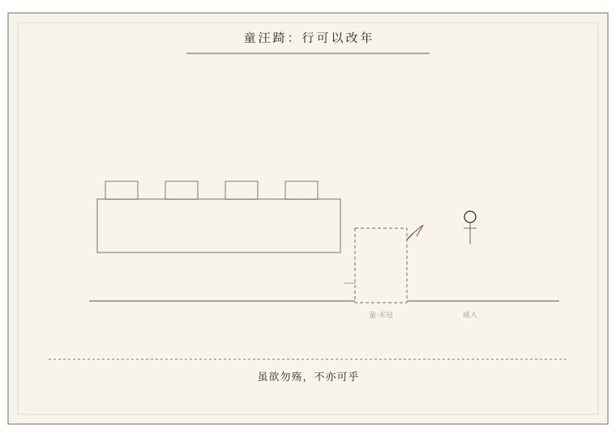

檀弓下 · 四·五十八 · 第 383 课
战于郎。公叔禺人遇负杖入保者息，曰：「使之虽病也，任之虽重也，君子不能为谋也，士弗能死也，不可。我则既言矣。」与其邻重汪踦往，皆死焉。鲁人欲勿殇重汪踦，问于仲尼，仲尼曰：「能执干戈以卫社稷，虽欲勿殇也，不亦可乎？」
说什么事：齐鲁战于郎。公叔禺人见一个背着杖躲进小城的疲兵，说：「徭役使他这样疲病，赋税使他这样沉重，而卿大夫不能为他谋划，士不能为他死难，这不行。我已经说了这话了。」于是与邻家童子汪踦一同上前，都战死了。鲁人想不以殇礼（未成年人之丧）葬汪踦，问孔子。孔子说：「能执干戈以卫社稷，就是想不以殇礼待他，不也可以吗？」
落在哪一层：以「行」抬「龄」。一个人做了什么，可以改掉他几岁。
为何编在此位：上节论技术不可越分，此节论年龄不可限行。一止一许，皆以「该不该」定，不以「能不能」定。
【经】战于郎。公叔禺人遇负杖入保者息，曰：「使之虽病也，任之虽重也，君子不能为谋也，士弗能死也，不可。我则既言矣。」与其邻重汪踦往，皆死焉。鲁人欲勿殇重汪踦，问于仲尼，仲尼曰：「能执干戈以卫社稷，虽欲勿殇也，不亦可乎？」
【注】郎，鲁近邑也。哀十一年「齐国书帅师伐我」是也。／遇，见也。见走辟齐师，将入保，罢倦，加其杖颈上，两手掖之休息者。保，县邑小城。禺人，昭公之子。《春秋》传曰：「公叔务人。」／谓时繇役。／谓时赋税。／君子，谓卿大夫也。鲁政既恶，复无谋臣，士又不能死难，禺人耻之。／欲敌齐师，践其言。／奔敌死齐寇。邻，邻里也。重皆当为童，童，未冠者之称。姓汪名踦。／见其死君事，有士行，欲以成人之丧治之。／善之。
【疏】此节论童子死难之事。／「战于郎」，哀十一年齐伐鲁，鲁与齐师战于郎。郎者，鲁之近邑也。／禺人见而言曰：「国以徭役使此人，虽复病困，国以赋税责任人民，虽复烦重，若上能竭心尽力，忧恤在下，则无以负愧。今君子卿大夫不能为谋士，又不能致死，是自全其身，不爱民庶，于理不可。」既嫌他不死，欲自为致死之事，故云「我则既言矣」。既，已也。云我则已言之矣，乃践其言，于是与邻之童子姓汪名踦往赴齐师而死焉。／依礼，童子为殇。鲁人见其死寇，欲勿殇童汪踦，意以为疑，问于仲尼。仲尼报之云：汪踦能执干戈以卫社稷。勿犹不也。虽欲不以为殇，不亦可乎？言其可为不殇也。／案《丧服》「小功」章「大夫为昆弟之长殇」，注云「谓为士者，若不仕者也」。以此言之，虽见为士，犹以殇服服之，何以此云「死君事，有士行，欲以成人之丧治之」者，《丧服》所论，据寻常死者，虽见为士，犹以殇服服之。汪踦能致死敌，故以成人之丧治之。
郎 鲁近邑。
公叔禺人 昭公之子，《春秋》传作「公叔务人」。
负杖 把杖架在颈上，两手持之。
入保 躲进小城。保，县邑小城。
息 歇息。
使之虽病 徭役使他疲病。
任之虽重 赋税使他负担沉重。
君子 此指卿大夫。
我则既言矣 我已说了这话了。
重汪踦 注云「重皆当为童」，童子汪踦。姓汪名踦。
殇 未成年而死之丧礼。
勿殇 不以殇礼待之，即以成人之丧治之。
干戈 兵器，此指战事。
齐鲁战于郎。公叔禺人见一个把杖架在颈上、躲进小城的疲兵在歇息，说：「徭役使他这样疲病，赋税使他这样沉重，而卿大夫不能为他谋划，士不能为他死难，这不行。我已经说了这话了。」于是与邻家的童子汪踦一同上前，都战死了。鲁人想不以殇礼葬汪踦，问孔子。孔子说：「能执干戈以卫社稷，就是想不以殇礼待他，不也可以吗？」
此章记一次践言。一个人说了一句「不可」，然后自己去做了。
而那与他同去的，是个还没到戴冠年纪的童子。
第一层 所见之一幕 注云：「见走辟齐师，将入保，罢倦，加其杖颈上，两手掖之休息者。」
一个逃兵，把杖架在脖子上，两手扶着，喘气。 此一细节，是禺人全部议论的起点。
礼之议论，常起于一个具体的身体。
第二层 「使之虽病也，任之虽重也」 此二句说民之苦：徭役使之病，赋税使之重。
先认民之苦，再论上之责。 禺人不责此兵之逃，先责上之使。
第三层 「君子不能为谋也，士弗能死也」 此二句说上之失：卿大夫不能谋，士不能死。
注云「禺人耻之」——耻者，耻其为贵者而不能担。
第四层 「不可」二字 此二字是全章的转轴。
不是「可叹」，不是「可恨」，是「不可」——这是一个判断，不是一个情绪。
第五层 「我则既言矣」：一句最重的自约 疏云：「既嫌他不死，欲自为致死之事，故云『我则既言矣』。」
说出口的话，成了对自己的命令。
此一节立下一个极古的规矩：论人之失者，须自任其责。 若只说人，则话轻；说而自践，则话重。
第六层 「与其邻重汪踦往，皆死焉」 注云「重皆当为童」——童子。
与一个童子同死。 此一节最不忍读处，也是全章最重处。
禺人携童子同往，礼上可议；而其死，则礼不能不许。
第七层 「鲁人欲勿殇」：一次犹豫 依礼，未冠而死为殇，其丧降于成人。
鲁人见其死国事，想不以殇礼待之，而不敢自定，故问孔子。
此一「问」字，见鲁人之慎：破礼之事，不敢自专。
第八层 仲尼之答：一句许可 「能执干戈以卫社稷，虽欲勿殇也，不亦可乎？」
孔子不说「当勿殇」，说「不亦可乎」。 语气留有余地：可也，非必也。
此一语气，是礼对「破例」的常态：许之而不立为常。
第九层 殇服之常与破例之由 疏辨《丧服》「大夫为昆弟之长殇」注「谓为士者，若不仕者也」——虽已为士，仍以殇服服之。
而汪踦不同者：「能致死敌，故以成人之丧治之。」
此一层说明：殇服之降，所降者是「未成其人」，不是「未及其年」。 一个人若已成其事，则其年不足论。
与今日何干 今之论人，多以资历、年龄定其位。
此章给一句：他做了什么，可以改掉他几岁。
| 左 | 右 |
|---|---|
| 战于郎 | 鲁近邑 |
| 负杖入保者息 | 民之疲 |
| 使之虽病 | 徭役 |
| 任之虽重 | 赋税 |
| 君子不能为谋 | 上之失 |
| 士弗能死 | 上之失 |
| 我则既言矣 | 自践其言 |
| 与童汪踦皆死 | 同赴 |
| 能执干戈以卫社稷 | 勿殇之由 |
画城外的一片战场边地，视点平视。前景画一个较矮的人形，身量只及常人之肩，一手执一柄长戈横于身前。人形之后画一段城墙的矮垛，墙头有方齿。人形脚下有一根断杖横置。人形之外，用一道较粗的方框围住他，框的四角不闭合。不画文字。赭色只用在那柄长戈的戈头上。
